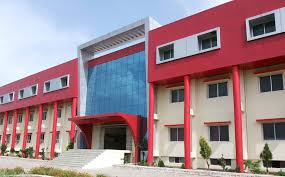

ABOUT JABALPUR CITY
Jabalpur is one of the major cities of Madhya Pradesh state in India. Jabalpur is also the birthplace of Maharishi Mahesh Yogi, Osho Rajneesh. Several important federal and state institutions are located in Jabalpur including premier technology institute Indian Institute of Information Technology, Design and Manufacturing, Jabalpur, Madhya Pradesh High Court, four Ordnance Factories of the gigantic Ordnance Factories Board, Madhya Pradesh Electricity Board, Tropical Forest Research Institute and West Central Railway zonal headquarters. Jabalpur is also known for its world famous tourism destination picturesque marble rock formations (Bhedaghat) across the banks of the river Narmada.
ABOUT COLLEGE
The institute with its sprawling campus, is located in the heart of the Marble City. Hardly 8 kms far from main Bus stand & 2 kms from the Bhedaghat Railway station, the college has the most convenient access and also has the beauty of nature and Narmada river all around. Near by the campus is situated one of the famous temples of the city; well known as Tripur Sundari Mandir. Jabalpur has well developed markets with shops, banks, post offices, restaurants and other facilities needed for recreation. LNCT Jabalpur is an upcoming star of LNCT Group of Colleges determined to achieve the Motto - "Working Towards Being The Best." The institution was established in 2008 under the aegis of H. K. Kalchuri Education Society. LNCT Jabalpur is situated near the famous international tourism spot "Marble Rocks". The college campus spread over an area of 33 acres of land surrounded by natural beauty. From the time of its inception, the institution is focused in providing quality education to its students for their all around development and has strived towards being the best amongst all. Within a very short span of 8 years, the institution has obtained ISO 9001-2008 certification for its international quality standards in technical education. LNCT Jabalpur is approved by AICTE, New Delhi in conducting its BE, M.Tech., and Diploma courses under the affiliation of RGPV Bhopal and MBA course under RDVV, Jabalpur. The college has well equipped classroom, drawing halls and workshops. In addition to these, the college has well equipped state-of-the-art laboratories, computer centers and library. Hostel facility for boys and girls are also available lace wigs.
PEER GROUP
It gives us great pleasure to welcome you all to the LNCT family. LNCT group stands out as a unique private engineering institute because of its distinct and innovative training methods, both for teaching as well as for overall personality development. These consist of practical exposure to actual industrial life situation in order to groom the students to be realistic, multi skilled and more effective in their corporate career. The institute is striving to groom the students so that they can perform well in the dynamic and ever challenging corporate environment.
We are proud to be associated with this institute. In the five years of its existence, LNCT has become synonymous with provider of ample opportunities for overall personality development, placement and quality education. Above all, it has the most beautiful campus situated in the heart of the city.At the end, we take this opportunity to welcome you in the LNCT group and assure you of an eventful and pleasant journey during your course of studies in the institute.